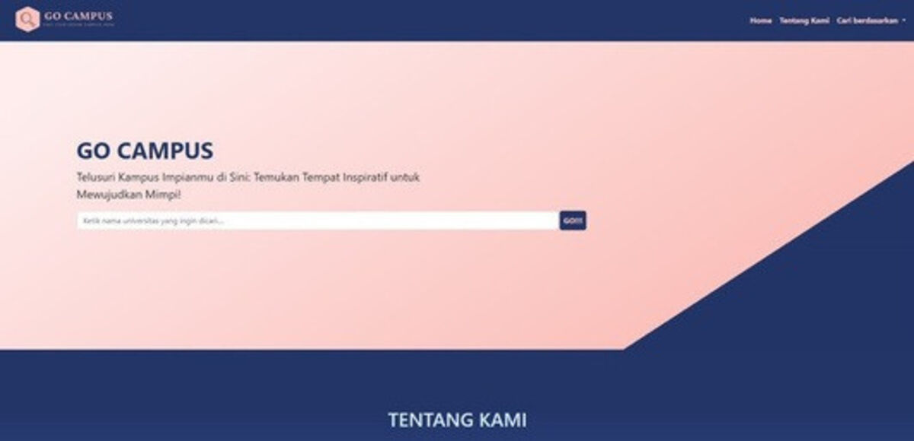
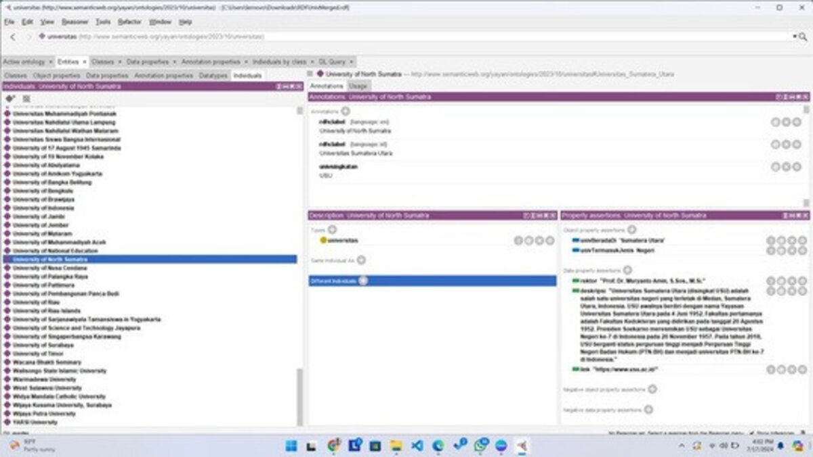

← Back to projects
Backend Developer
Go Campus
A semantic web-based search engine for universities across Indonesia, built to help students find their ideal campus with more accurate, structured search results.
Contribution
- Designed and implemented the core dataset for the semantic web search engine.
- Used Protégé to model and input relevant university data.
- Built a structured framework using RDF (Resource Description Framework).
- Enabled data integration with external sources for improved search precision.
- Contributed to a university search tool that delivered accurate and efficient results.

